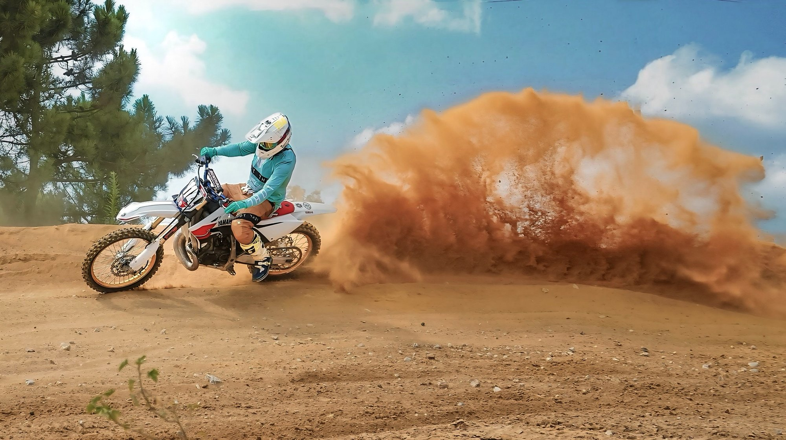
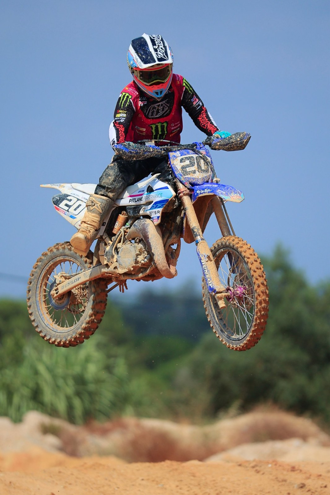

The Fifty Party Motocross Experience brought riders to Pontes, Portugal, on 25 July 2026, with Image Media's Eduardo Castro, Paulo Nomade, Fran Paulino and Raul de Godoy covering the event.

The Fifty Party Motocross Experience brought riders to a dirt track in Pontes, Portugal, on Saturday 25 July 2026. Image Media's team was on site through the day, capturing competitors working through the circuit's jumps and berms in conditions that left riders and machines caked in dust and mud.

No independent results, official standings or participant numbers for the Fifty Party Motocross Experience had been published at the time of writing.

Event coverage at the Fifty Party Motocross Experience was provided by Eduardo Castro, Paulo Nomade, Fran Paulino and Raul de Godoy for Image Media.